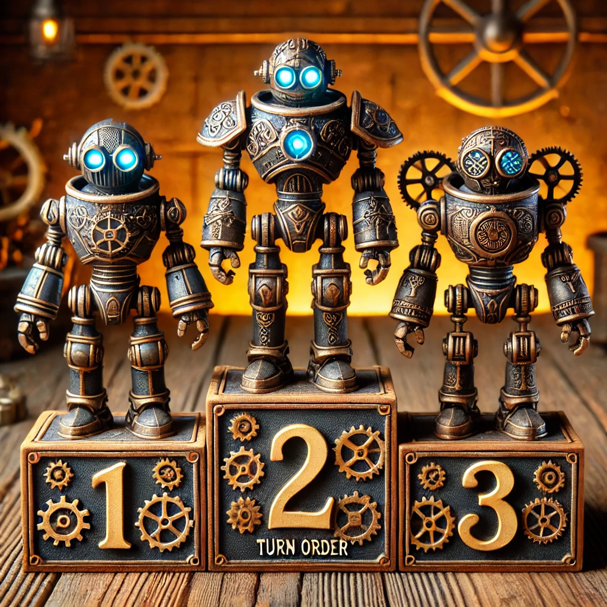

Documentación
LÓGICA DE LA BANCA
Nuestra banca tiene cuatro “reglas” o “condiciones” que determinan si pide una carta o no. La primera de estas reglas es un filtro que mira la situación de todos los jugadores y la propia banca; las otras tres reglas son filtros adicionales que se activan cuando el primer filtro no se cumple.
Primer filtro: ¿La banca gana sin pedir carta?
Dado que la banca siempre es la última en jugar, cuenta con ciertas ventajas estratégicas a la hora de tomar decisiones en la partida. Es por eso que en nuestro código hemos tenido que contemplar lo siguiente:
- La banca se fija en todos los puntos de la mesa (los de cada jugador) y comprueba si ya tiene la victoria asegurada.
- Esto puede ocurrir aunque la banca no tenga ni una sola carta: si todos los jugadores se han pasado de 7.5, la banca ya gana la ronda sin hacer nada.
- Si, de un modo u otro, la banca ve que no necesita arriesgarse para vencer (por ejemplo, porque con su puntuación actual supera a todos los que siguen en juego), no pide carta.
Ejemplo:
Si la banca es de tipo intermedio y tiene una probabilidad del 40% de pasarse, podría decidir arriesgarse si su puntuación actual es más baja que la de los demás jugadores en juego. Sin embargo, si quedarse quieta significa perder seguro, la banca se arriesga.
Segundo conjunto de reglas: los tres filtros que indican “pide carta”
Si la banca detecta que no está ganando con la situación actual (es decir, no se cumple el primer filtro), entonces aplica estos tres nuevos filtros. Es muy importante tener en cuenta que, con que uno de ellos se cumpla, la banca decidirá pedir carta:
- La probabilidad de exceder 7.5 puntos: La banca se “clasifica” como agresiva, intermedia o pasiva según el tipo de jugador que le haya sido asignado (siendo 50% para agresivo, 40% para intermedio y 30% para pasivo). En función de estos porcentajes se define la personalidad del jugador a la hora de jugar o de arriesgarse.
- Va perdiendo con todos: Si ningún jugador se ha pasado y la banca contempla que su puntuación actual es más baja que la de todos los demás en juego, está obligada a arriesgarse para no perder la ronda.
- Puede perder todos sus puntos restantes: Si la banca se encuentra en una situación en la que, de no mejorar su puntuación, va a perder todos los puntos que le quedan, decide jugársela al máximo.
Ejemplo:
Si la banca es un jugador de tipo intermedio (40%) y sus probabilidades de pasarse de la puntuación máxima son del 60%, pero en esta ronda NO gana a ningún jugador de la mesa (todos los demás jugadores han sacado un 6 y la banca tiene un 5.5); la banca pide carta.
En resumen
Si la banca ya gana: no pide más cartas.
Si no gana: se fija en esos tres filtros (probabilidad de pasarse, si va perdiendo con todos y si puede quedarse sin puntos). Con que uno de esos factores indique que conviene robar carta, la banca lo hace.
Esta lógica permite que la banca sepa cuándo arriesgarse y cuándo plantarse para maximizar sus posibilidades en la partida de 7 y medio.
LÓGICA DEL BOT
La lógica que sigue el bot es prácticamente la misma que la que sigue la segunda condición de la banca.
Es decir, el bot jugará ante todo siguiendo el tipo de jugador que es (agresivo, intermedio o pasivo), y en base a sus probabilidades, intentará sacar la mayor puntuación posible, plantándose una vez supere su probabilidad de tipo de jugador (30%, 40% o 50%).
Prioridad de los Jugadores
Para establecer la prioridad de los jugadores se tiene en cuenta la initialCard (carta inicial). Se compara el “value” de las cartas, y en caso de que los dos valores de las cartas sean iguales (es decir, 13 de value con 13 de value), procederá a compararse el palo de la carta (si es oro, bastos, etc.), cuyo valor viene definido en las normas del juego.
Este valor se ordenará usando el método burbuja, ordenando la prioridad de dichas cartas de menor a mayor, y ordenando también así a los jugadores de la partida, siendo el último jugador (es decir, el que mayor prioridad tiene) la banca.
De esa forma, nos aseguramos que la banca siempre ocupe el último lugar de la lista para poder acceder a ella con el índice -1.
Inserción de Bases de Datos
Para insertar dichas bases de datos, hemos guardado todos los datos en un diccionario vacío con todos los datos que contenían las tablas. Las claves de dicho diccionario son las columnas de la tabla (que aparecen en nuestra base de datos MySQL). El valor, lo que contengan estas columnas.
Una vez tenemos todos los datos importados al diccionario, lo pasamos a una tupla ordenada.
Después, insertamos estas tuplas a la base de datos para que se actualicen y se almacenen todos los datos que hayan transcurrido en el juego.